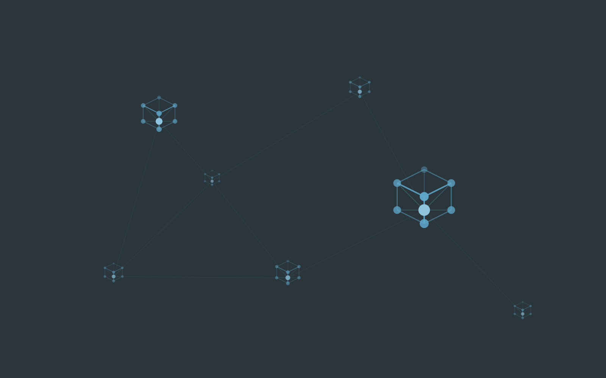
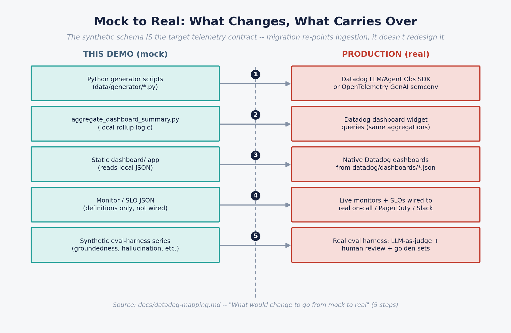

Agentic Gen AI fails in ways conventional APM never sees. A workflow returns HTTP 200, the user gets a reply — and underneath sits an unbudgeted cost curve, a weak citation, a bypassed policy gate, or a refund tool driven by an injected prompt. This is a minimum-viable observability model for that class of system: cost, reliability, performance, agent behaviour, security and responsible-AI risk in one place, correlated by trace.
Traditional observability answers did it respond, how fast, did it error. None of those questions detect the six failure modes that actually matter to an architecture board, a risk committee or a CFO.
Prompt bloat, retry storms and fallback routing move unit economics without a single error being raised. Cost per successful workflow is the only honest denominator.
Groundedness, citation accuracy and hallucination rate are invisible to request tracing. They come from a separate evaluation pipeline running on sampled traffic.
Tool calls with real-world side effects — refunds, writes, sends, purchases — need approval-decision telemetry, not just success counts.
Prompt-injection attempts, and specifically the share that bypassed the guardrail, are the signal. Blocked-only reporting flatters the control.
Rate limits and quota exhaustion are a material share of production LLM failures — a capacity risk expressed as a reliability and cost incident.
A prompt version bump is a production change. Without regression scoring and an eval gate, quality regressions ship silently and are found by customers.
Starting from the catalogue's own "practical dashboards to build" shortlist (the first three) and extending through the rest. Each is audience-specific — an executive should never have to read a trace waterfall to know whether the programme is healthy.
Workflow volume, success rate, cost per successful workflow, monthly run-rate, estimated cost avoidance vs. a human-handled equivalent, P95 latency, incident log, policy violations.
Latency decomposed by layer (model / retrieval / tool), P50–P99 trend, error and retry rate, rate-limit events, agent loop events, and a representative single-trace waterfall.
Prompt-injection attempts split blocked vs. bypassed, sensitive-data egress, toxicity flags, high-risk tool calls, policy-approval bypasses, and an incident spotlight.
Token usage, cost by model, quota utilisation against an assumed daily quota, cumulative cost vs. monthly budget, and fallback-model cost uplift.
Average steps and tool calls per workflow, tool-call mix, escalation rate, and tool-call success rate as a tool-selection-quality proxy.
Retrieval hit rate, groundedness, citation accuracy, hallucination rate, abstention rate and source freshness — from the evaluation series, not raw spans.
Regression pass rate, golden-set accuracy, canary health and the release/rollback log — the eval-gate loop that turns a prompt change from an untracked edit into a governed production release.
The full catalogue runs to roughly 150 metrics. Nobody instruments 150 on day one — this is the priority set, and the honest status of each in the demo.
| Priority metric | Why it earns a place | Status in this demo |
|---|---|---|
| Cost per successful workflow | Economic viability — the unit that survives board scrutiny | MODELLED Executive tab |
| Workflow success rate | Reliability defined by business outcome, not HTTP 200 | MODELLED Executive tab |
| End-to-end latency P95 | UX and SLA, decomposed by layer | MODELLED Executive + Engineering |
| Retry, timeout & fallback rate | Waste, instability and silent degradation | MODELLED timeout via tool error_type only |
| Rate-limit events | Provider quota and scaling risk | MODELLED Engineering tab |
| Tokens & calls per workflow | Cost drivers and agent efficiency | MODELLED raw span data |
| Groundedness & citation accuracy | Factual trust and source-backed integrity | EVAL SERIES synthetic, not span-derived |
| Prompt-injection attempt rate | Adversarial pressure — track the bypass share | MODELLED Security tab |
| Sensitive-data egress events | Privacy and confidentiality; zero tolerance | MODELLED Security tab |
| Unauthorised tool-call attempts | Excessive agency — the highest-consequence failure | MODELLED policy-approval bypasses |
| Human escalation rate | Where the automation boundary actually sits | MODELLED Agent Behaviour tab |
| Incident MTTD / MTTR | Operational readiness of the AI estate | MODELLED Executive incident log |
| Model / prompt version regression score | Change and drift detection at release time | MODELLED seeded v14→v15 rollback |
| Human override rate | Trust and quality proxy | NOT MODELLED no human-edit concept in v1 |
| Bias / fairness flags, refusal quality | Responsible-AI assurance evidence | NOT MODELLED scoped to Weeks 7–10 |
Illustrative figures from the default single-scenario config over a 30-day window. Regenerate the data to reproduce them exactly — these are outputs of a model, not claims about a live system.
*Illustrative only — assumes a $6.50 fully-loaded cost per human-handled contact. That is a modelling assumption for this demo, not a sourced benchmark, and it is the number an executive audience will challenge first. Treat it as a sensitivity input, not a result.
A dashboard that only ever shows a healthy green estate proves nothing. Three failure narratives are deliberately injected so each dashboard has a job to do and can be demonstrated end to end.
| Event | What happened | What it demonstrates |
|---|---|---|
REL-2026-0608REL-2026-0609Release regression |
A prompt version bump (v14 → v15) degraded groundedness and citation accuracy. Caught by the evaluation harness and rolled back roughly 27 hours later. | The Release & Evaluation dashboard's core job — catching a quality regression before it becomes a customer-visible incident, and evidencing the eval-gate → rollback loop for change governance. |
INC-2026-0611Sev2 |
A cluster of prompt-injection attempts targeting the refund_issue tool. The guardrail caught 92%; a handful bypassed. |
The Security dashboard's core job — detecting an adversarial pattern and quantifying precisely what got through. The 8% is the risk-committee conversation. |
INC-2026-0621Sev1 |
A promo-driven traffic surge triggered provider rate-limiting, forcing retries and fallback-model routing — spiking both latency and cost. | Capacity risk expressed simultaneously as a reliability and a cost event. Mirrors Datadog's published finding that provider rate limits are a material share of production LLM failures. |
This is the design decision that makes the demo more than a mock-up. Every field the generator emits is a field a real instrumentation layer must emit. Moving to production replaces the data source — not the model, not the dashboards, not the contract.
A trace tree per workflow — workflow, LLM, retrieval, tool and guardrail spans — from the Python generator, or from platform emitters (Azure AI Foundry, GCP ADK, AWS AgentCore) over OTLP.
An OpenTelemetry Collector receives OTLP on 4317/4318; a bridge converts Collector JSONL into the contract CSVs. Same field names in both the synthetic and simulated-live paths.
One aggregator produces daily rollups consumed by a static, dependency-free dashboard (Chart.js via CDN, GitHub Pages-ready) with a Synthetic | Live toggle.

/datadog instead of reading local JSON. Full diagram set — trace tree, telemetry dataflow, dashboard information architecture, Datadog implementation architecture — ships in training/diagrams/.Four phases, each with an exit criterion an architecture board can actually test — and an honest status against this repo. Two phases are complete in mock form; one is partial; one has not started.
| Horizon | Goal | Exit criterion | Status in this repo |
|---|---|---|---|
| Weeks 0–2 Foundation | Establish standards and one observable pilot | One agentic workflow visible end-to-end with model spans, tool spans, token/cost/latency metrics and basic monitors | DONE IN MOCK FORM Telemetry contract defined; one workflow fully instrumented — as synthetic data, not live traffic |
| Weeks 3–6 Operate | Move from traces to operational control | Production support can detect, triage and assign AI workflow incidents via the platform, not manual log inspection | DONE IN MOCK FORM All 7 dashboards built; SLO/monitor definitions stubbed but not wired to a live alerting channel |
| Weeks 7–10 Govern | Operationalise responsible AI and security controls | High-risk workflows carry policy-decision telemetry, audit evidence, approval/override tracking and responsible-AI dashboards | PARTIAL Guardrail and approval telemetry modelled; a real eval harness, bias/fairness flags, refusal quality and human override rate are not |
| Weeks 11–13 Scale | Create reusable platform patterns | Second and third use cases onboard with materially less effort; governance and operations patterns are reusable | NOT STARTED Single-use-case reference; extracting a reusable instrumentation library is the next phase once real traffic exists |
≥ 98% for low/medium-risk workflows, higher for critical. Success defined by business outcome — not HTTP 200, not "the LLM responded".
Budget threshold by use case and business unit. Alert when cost rises faster than successful completions.
Use-case specific, with separate targets for interactive chat and batch agents; always decomposed by layer.
Hard stop at a defined step count, repeated tool sequence or fan-out threshold. A breach is both a reliability and a cost-risk event.
Zero tolerance for confirmed credential, secret or protected-data leakage. Block, redact, escalate by severity.
Zero tolerance. Covers write, delete, send, purchase, financial, HR and production actions.
Instrumenting to this depth buys evidence and speed. It also adds telemetry cost, cardinality and a new class of alert fatigue — that trade should be made deliberately, at board level.
No build step, no server-side code, no dependencies beyond Python 3 (standard library only) for the generator and a browser for the dashboard.
Condensed metrics catalogue, the catalogue → Datadog telemetry-contract mapping, and the annotated 90-day roadmap.
Config-driven, deterministic per-scenario RNG streams — add a use case by appending to config.json, never by editing code.
Seven tabs, GitHub Pages-ready, with a Synthetic | Live data-source toggle.
Dashboard, monitor and SLO templates for the real implementation.
Collector config, platform emitters (Azure Foundry, GCP ADK, AWS AgentCore) and the JSONL → contract-CSV bridge.
Facilitator guide, six architecture diagrams, a Word training guide, and Exec Overview plus Technical Deep-Dive decks.